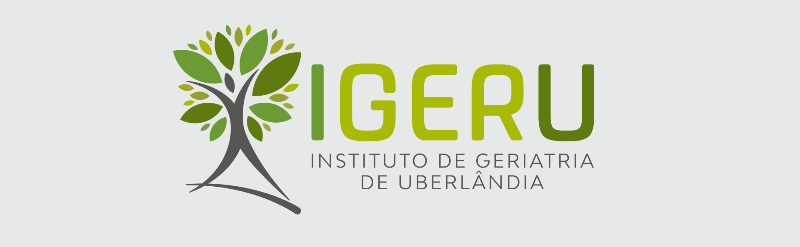
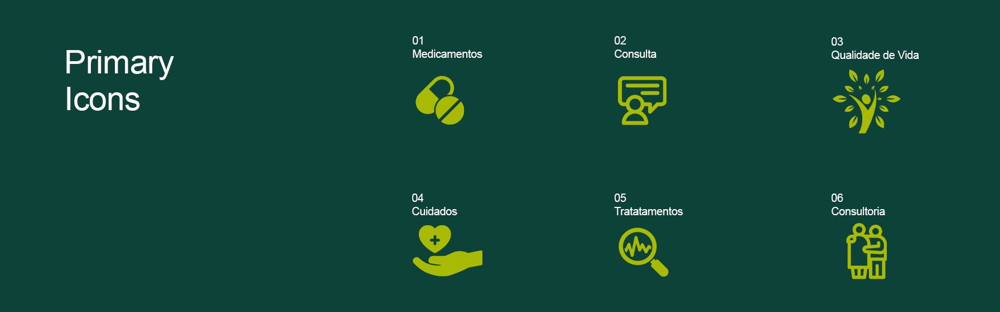
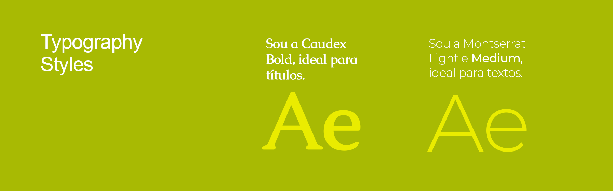
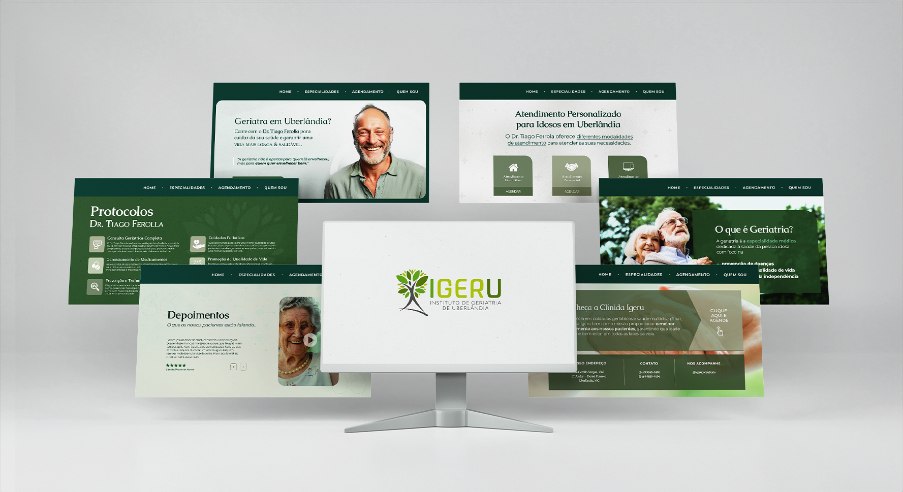
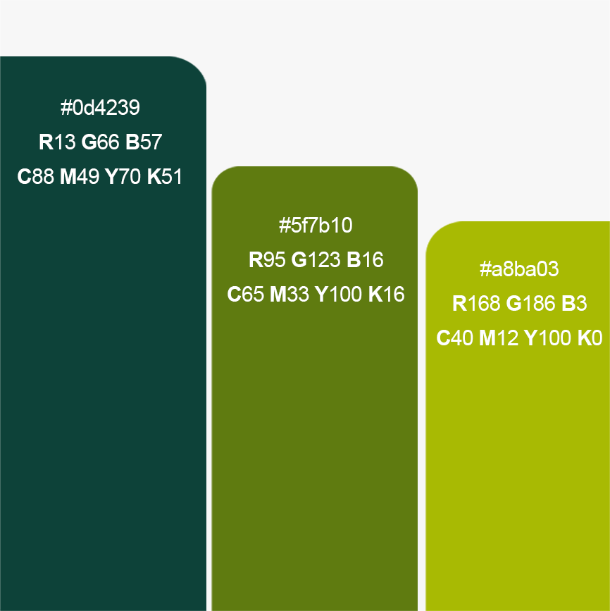

Web Design / Igeru 👵🩺💻
This website was designed for a Brazilian geriatrician, offering an easy-to-navigate platform for patients to learn about his expertise and schedule appointments. With a clean, user-friendly interface and a soothing green color scheme, the site ensures accessibility—especially for older users—making healthcare information and appointment booking seamless.


The Idea And The Process
- The website was designed with a focus on simplicity, accessibility, and care. Green tones symbolize health and well-being, reinforcing a sense of trust beyond just medicine. The goal was to create a visually appealing yet easy-to-use platform, especially for older users, with legible fonts and minimal navigation to avoid confusion.
- The process began with wireframing a familiar, user-friendly layout instead of a modern or complex design. While the client preferred a green-and-white theme, I carefully refined the color palette to keep it visually engaging while maintaining a clean and intuitive interface.


